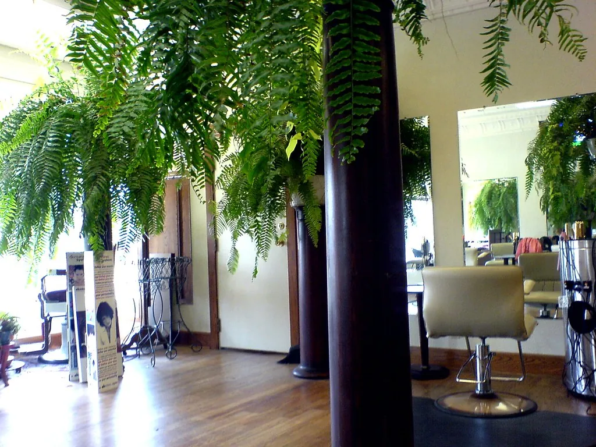
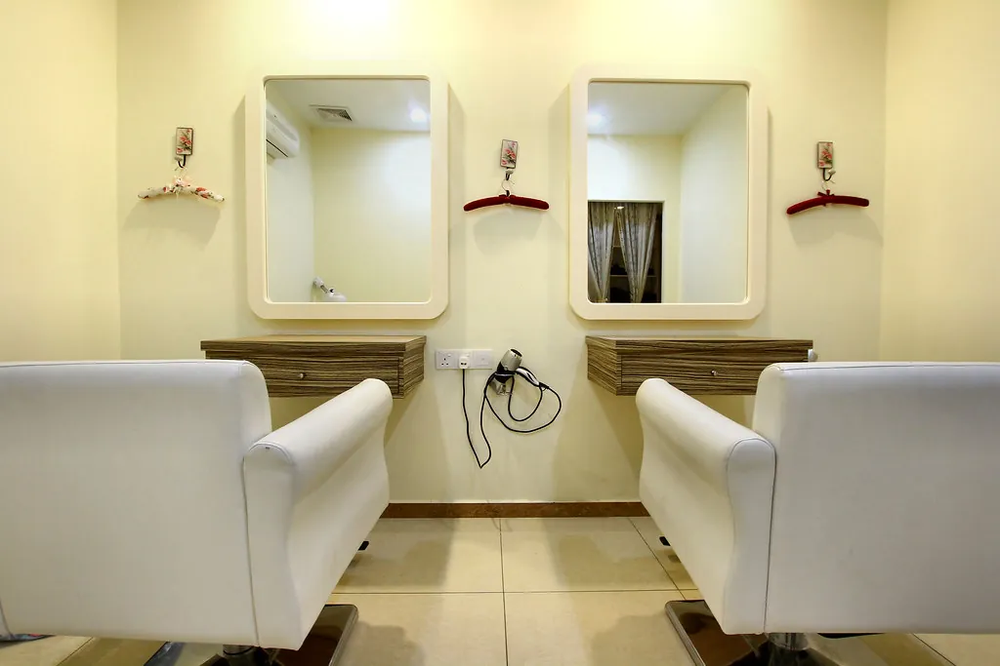

Cortes
Cortes pensados para tu tipo de pelo y para cómo te peinas de verdad por las mañanas.
desde 22 €Reservar →
Cortes que crecen bien, rizos que se definen solos y color que respeta tu pelo. Sin prisas, con café y buena música.
Seis especialidades y un equipo de cuatro. Si no sabes qué pedir, empieza por una consulta gratuita de diez minutos.
Cortes pensados para tu tipo de pelo y para cómo te peinas de verdad por las mañanas.
Corte en seco rizo a rizo y rutina de cuidado para que tus rizos se definan solos.
Tintes veganos sin amoniaco, balayage a mano alzada y colores fantasía.
Hidratación profunda, keratina vegetal y masaje craneal con aceites.
Prueba previa, recogidos y peinados que aguantan toda la fiesta.
Cortes infantiles tranquilos, con cuento incluido si hace falta.


Abrimos en 2016 en un antiguo taller de Gràcia. Cuatro sillones, un lavacabezas con vistas al patio y ninguna prisa: reservamos el tiempo que de verdad necesita cada servicio.
Trabajamos con marcas veganas y recargables, y reciclamos el pelo cortado para fabricar filtros de aceite para el mar.
★★★★★«Por fin alguien que sabe cortar rizos. Aisha me explicó cómo peinarlos en casa y ha cambiado todo.»
★★★★★«El balayage de Pol es precioso y, tres meses después, sigue creciendo bonito.»
★★★★★«Reservo online en un minuto, llego y me atienden a la hora. Así da gusto.»
Elige servicio, estilista, día y hora. Te confirmamos al momento y te recordamos la cita el día antes.
Reservar cita online